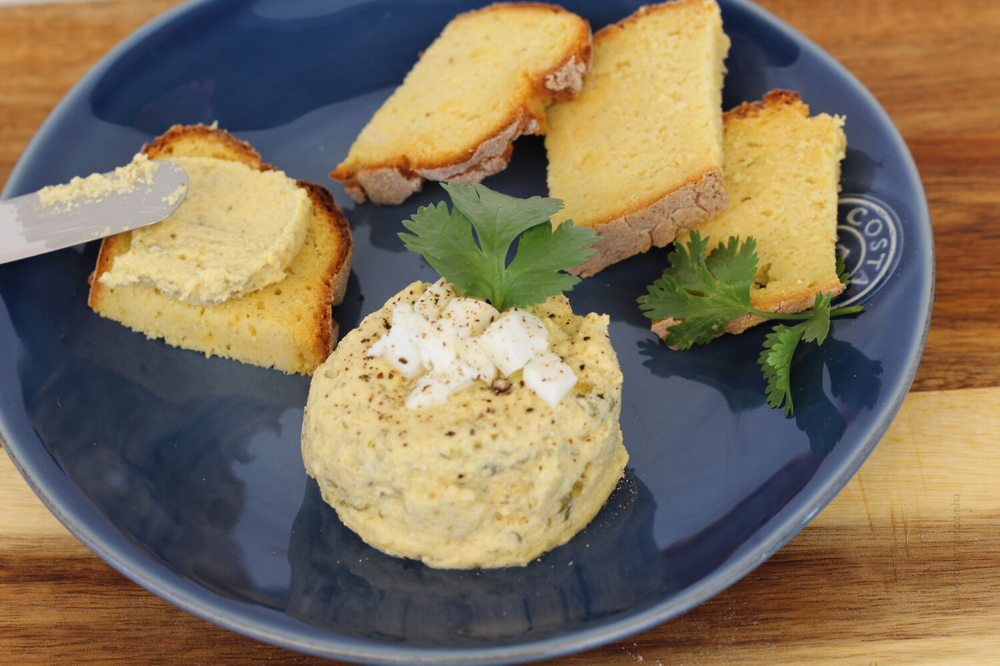

Paté de Línguas de Bacalhau
Ingredients
- 1 cup codfish tongues, boiled and peeled
- 1/2 cup cream cheese
- 2 tablespoons mayonnaise
- 1 tablespoon fresh parsley, chopped
- 1 tablespoon chives, chopped
- 1 teaspoon Dijon mustard
- 1 clove garlic, minced
- 1 tablespoon lemon juice
- Salt and black pepper to taste
- Crackers or bread for serving

Preparation
-
Prepare Codfish Tongues:
Boil the codfish tongues until they are cooked through. Peel the tongues and set them aside to cool.
-
Make the Paté Base:
In a food processor, combine the boiled and peeled codfish tongues, cream cheese, mayonnaise, chopped fresh parsley, chives, Dijon mustard, minced garlic, and lemon juice.
-
Blend:
Blend the ingredients in the food processor until you achieve a smooth and creamy consistency. Season with salt and black pepper to taste.
-
Adjust Consistency:
If the paté is too thick, you can add a bit more mayonnaise or lemon juice to reach your desired consistency.
-
Chill:
Transfer the paté to a bowl, cover, and refrigerate for at least 1 hour to allow the flavors to meld.
-
Serve:
Serve the Paté de Línguas de Bacalhau with crackers or bread as a unique and flavorful appetizer.